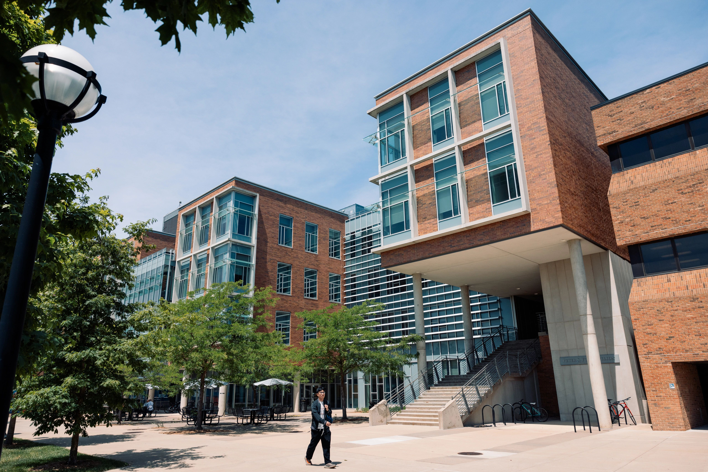

Study Spaces at U-M is a tool designed to help you find and reserve designated study spaces, computer stations, a space for you to take a remote class, or just a dedicated quiet touchdown spot between classes.
It's understandable that many might be anxious that there aren't many spaces on the site, after going through the last academic year where the primary method of accessing study space was to reserve.
[Enter more of your own content here - that includes changing the content of this page from Academic support to something else!]
Explore what's available and where
North Campus
- Bob and Betty Beyster Building(BBB)
- Climate and Space Research Building (CSRB)
- Electrical Engineering And Compputer Science Building (EECS)
- Ford Motor Company Robotics Building (FMCRB)
- George G.Brown Laboratories (GG Brown)
- James and Anne Duderstady Center (DC)
- Lurie Biomedical Engineering Building (LBME)
- North Campus Research Complex (NCRC)
U-M Library

- Sharpio Undergraduate Library
- Hatcher Graduate Library
- CVGA
- Taubman Health Sciences Library
- Hatcher Donor Carrels